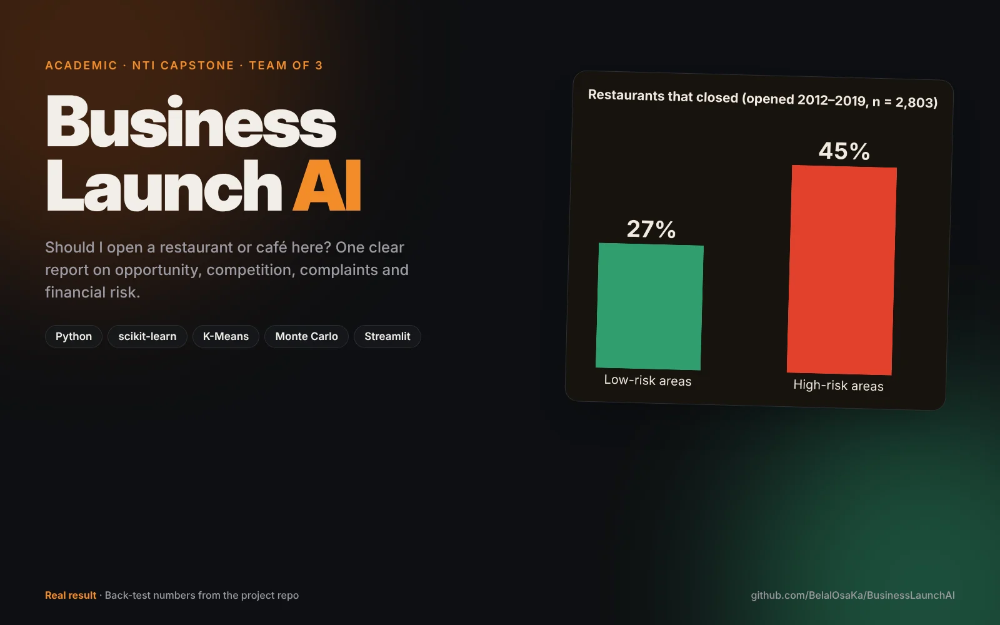
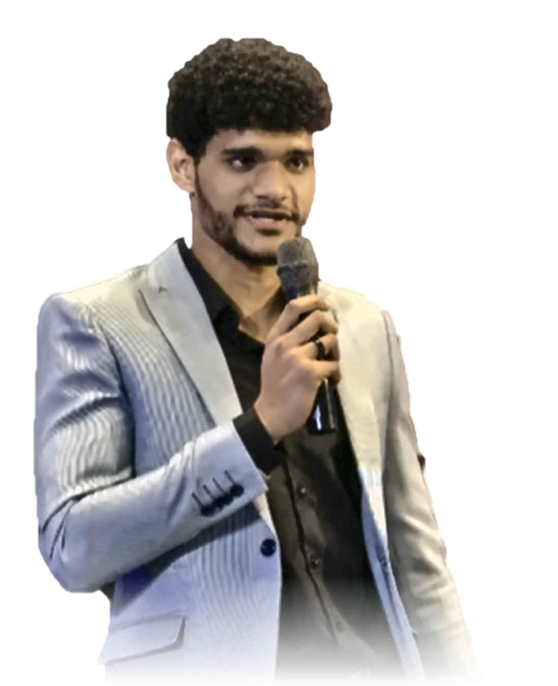
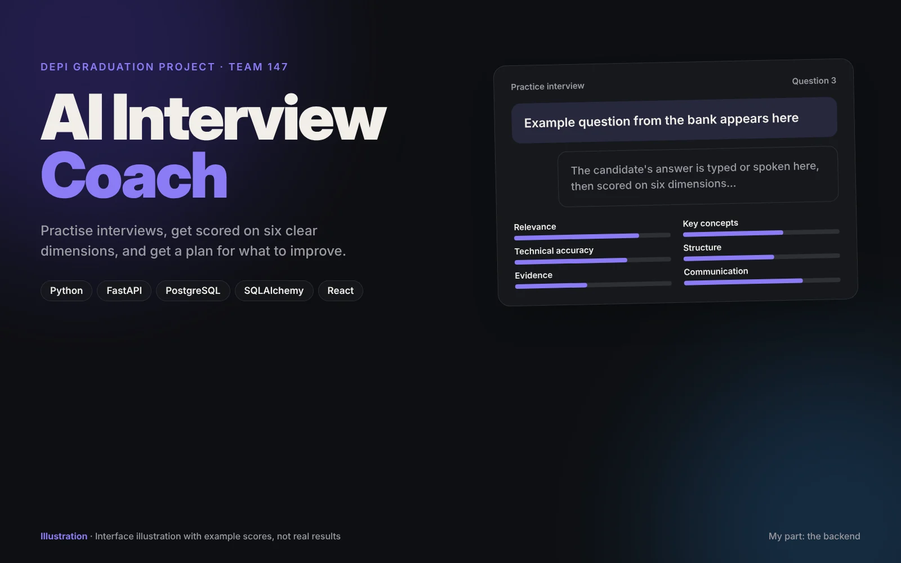
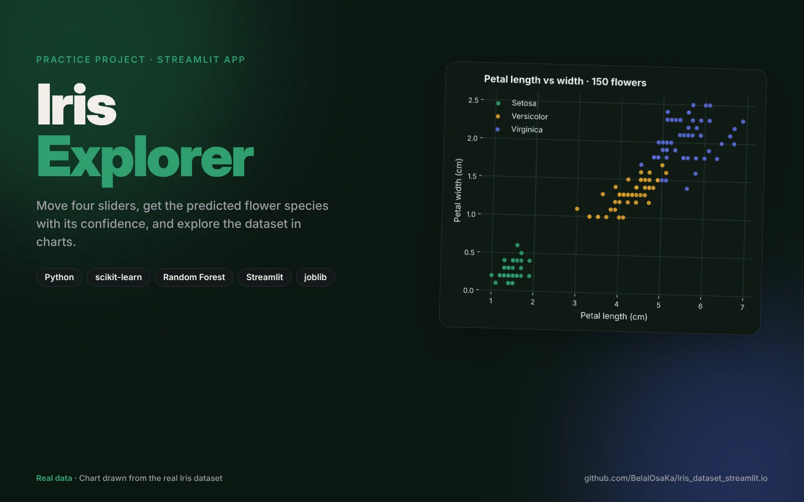
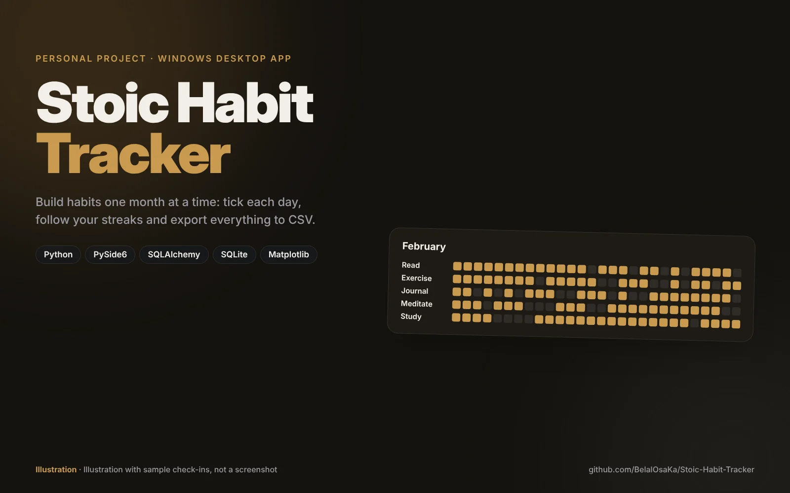

CompletedTells an entrepreneur whether a Philadelphia location is a good place to open a restaurant or café, using real Yelp data.
Read the case study GitHub repo ↗

I'm Belal Salah, a student at E-JUST who builds machine learning models in Python for small businesses and startups. I also teach code on my YouTube channel, Osaka Programming.
Real projects only. Open any card for the full case study: the problem, what I built, and how.

CompletedTells an entrepreneur whether a Philadelphia location is a good place to open a restaurant or café, using real Yelp data.

In progressPractise interviews, get scored on six clear dimensions, and get a plan for what to improve.

CompletedA Streamlit app that predicts a flower's species from four measurements and shows the dataset in charts.

CompletedA Windows desktop app for building habits month by month: daily check-ins, streaks and CSV export.
 In progress
In progress
Student records, grades and a daily schedule for each of a Business department's eight sections.
 Ongoing
Ongoing
My programming channel on YouTube, where I explain code in plain language.
I turn a business question into a working model. I care less about fancy architectures and more about whether the result actually helps the person who asked.
I'm studying at the Egypt-Japan University of Science and Technology (E-JUST), and I've trained through NTI, the DEPI program and Creativa's freelancing track.
Most of my work is in Python with scikit-learn, TensorFlow, Keras and PyTorch. I've also built desktop apps with PySide6, Android and Flutter apps, and I do 3D design and game development.
Prediction and classification models built in Python, trained on your data and explained in plain language.
Streamlit apps that put a model behind a simple interface your team can use without touching code.
Scripts, data cleaning, small FastAPI backends and desktop tools that take repetitive work off your plate.
Studying at E-JUST, including coursework in computer networks.
Graduation project: AI Interview Coach, where I own the FastAPI backend.
Built BusinessLaunch AI with two teammates as my capstone project.
Completed every assignment and set up my freelance service on Khamsat and Freelancer.com.
Tell me what you want to predict or automate. I'll reply with whether ML is the right tool and what it would take.